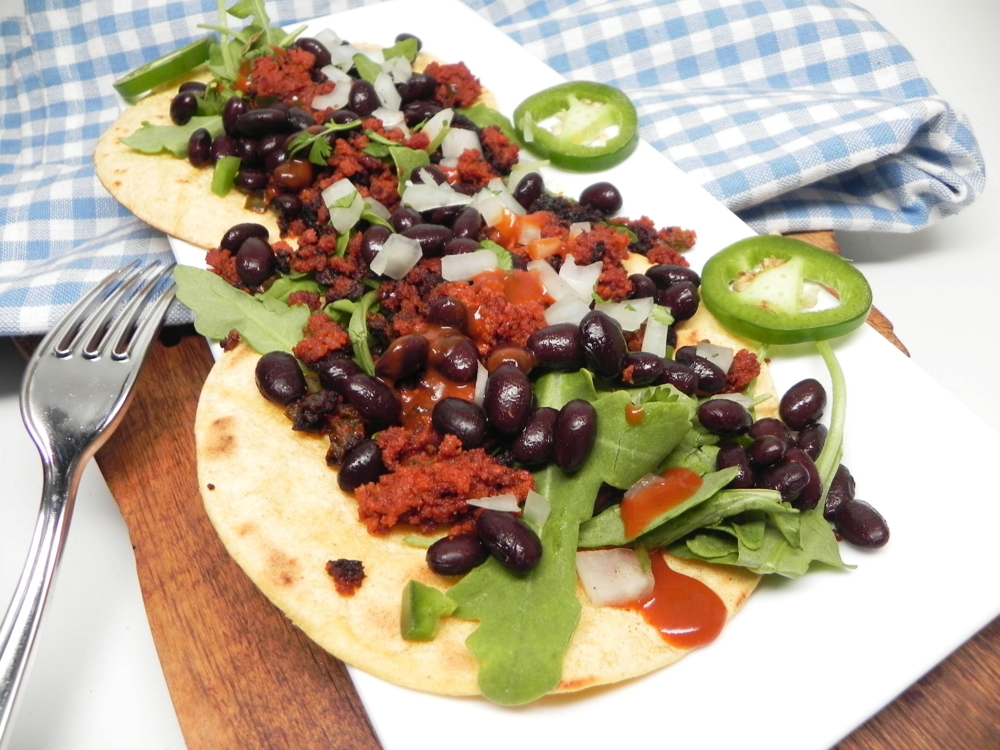

Soy Chorizo Taco Filling

Description
Taco filling using soy chorizo sausage is served in warmed corn tortillas, with baby greens, and black beans for a veggie taco that will satisfy vegans and carnivores alike!
Ingredients
- 2 tablespoons vegetable oil
- 8 ounces soy chorizo, cut into bite-sized pieces
- 2 green bell peppers, cut into bite-sized pieces
- 1 red bell peppers, cut into bite-sized pieces
- 1 medium onion, cut into bite-sized pieces
- ½ cup water
- 1 tablespoon taco seasoning mix, or to taste
- 1 teaspoon hot sauce, or to taste (Optional)
- 1 teaspoon paprika, or more to taste (Optional)
Steps
- Heat oil in a skillet over medium-high heat.
- Add chorizo and cook until slightly browned, about 5 minutes.
- Add bell peppers and onion and cook until slightly soft but still firm, about 5 minutes more.
- Add water and taco seasoning.
- Stir until thoroughly mixed and water is bubbly.
- Reduce heat to medium and let water reduce, 3 to 4 minutes.
- Add hot sauce and paprika.